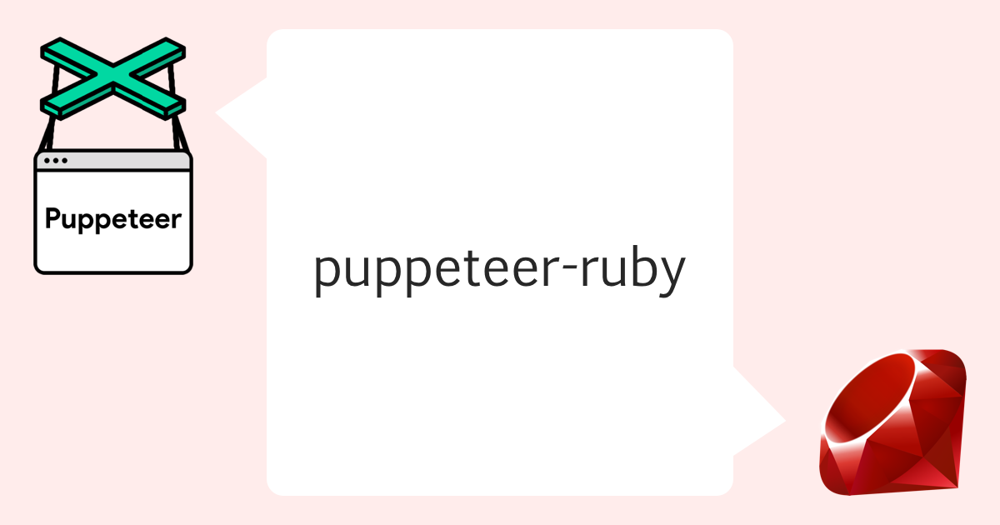

Puppeteer in Ruby [UNDER HEAVY DEVELOPMENT]
A Ruby port of puppeteer.

REMARK: This Gem is NOT production-ready!!
Getting Started
Capture a site
Puppeteer.launch(headless: false) do |browser|
page = browser.pages.first || browser.new_page
page.goto("https://github.com/YusukeIwaki")
page.screenshot(path: "YusukeIwaki.png")
end
Simple scraping
require 'puppeteer'
Puppeteer.launch(headless: false, slow_mo: 50, args: ['--guest', '--window-size=1280,800']) do |browser|
page = browser.pages.first || browser.new_page
page. = Puppeteer::Viewport.new(width: 1280, height: 800)
page.goto("https://github.com/", wait_until: 'domcontentloaded')
form = page.S("form.js-site-search-form")
searchInput = form.S("input.header-search-input")
searchInput.type_text("puppeteer")
await_all(
page.,
searchInput.async_press("Enter"),
)
list = page.S("ul.repo-list")
items = list.SS("div.f4")
items.each do |item|
title = item.Seval("a", "a => a.innerText")
puts("==> #{title}")
end
end
Evaluate JavaScript
Puppeteer.launch do |browser|
page = browser.pages.last || browser.new_page
page.goto 'https://github.com/YusukeIwaki'
# Get the "viewport" of the page, as reported by the page.
dimensions = page.evaluate(<<~JAVASCRIPT)
() => {
return {
width: document.documentElement.clientWidth,
height: document.documentElement.clientHeight,
deviceScaleFactor: window.devicePixelRatio
};
}
JAVASCRIPT
puts "dimensions: #{dimensions}"
# => dimensions: {"width"=>800, "height"=>600, "deviceScaleFactor"=>1}
end
More usage examples can be found here
:whale: Running in Docker
Following packages are required.
-
Google Chrome or Chromium
-
In Debian-based images,
google-chrome-stable -
In Alpine-based images,
chromium
Also, CJK font will be required for Chinese, Japanese, Korean sites.
References
-
Puppeteer official README: github.com/puppeteer/puppeteer/blob/main/docs/troubleshooting.md#running-puppeteer-in-docker
-
puppeteer-ruby example: github.com/YusukeIwaki/puppeteer-ruby-example/tree/master/docker_chromium
:bulb: Collaboration with Selenium or Capybara
It is really remarkable that we can use puppeteer functions in existing Selenium or Capybara codes, with a few configuration in advance.
require 'spec_helper'
RSpec.describe 'hotel.testplanisphere.dev', type: :feature do
before {
visit 'https://hotel.testplanisphere.dev/'
# acquire Puppeteer::Browser instance, by connecting Chrome with DevTools Protocol.
@browser = Puppeteer.connect(
browser_url: 'http://localhost:9222',
default_viewport: Puppeteer::Viewport.new(width: 1280, height: 800))
}
after {
# release Puppeteer::Browser reesource.
@browser.disconnect
}
it 'can be handled with puppeteer and assert with Capybara' do
# automation with puppeteer
puppeteer_page = @browser.pages.first
puppeteer_page.wait_for_selector('li.nav-item')
reservation_link = puppeteer_page.SS('li.nav-item')[1]
await_all(
puppeteer_page.async_wait_for_navigation,
reservation_link.async_click,
)
# expectation with Capybara DSL
expect(page).to have_text('宿泊プラン一覧')
end
it 'can be handled with Capybara and assert with puppeteer' do
# automation with Capybara
page.all('li.nav-item')[1].click
# expectation with puppeteer
puppeteer_page = @browser.pages.first
body_text = puppeteer_page.Seval('body', '(el) => el.textContent')
expect(body_text).to include('宿泊プラン一覧')
end
The detailed step of configuration can be found here.
API
yusukeiwaki.github.io/puppeteer-ruby-docs/
Contributing
Bug reports and pull requests are welcome on GitHub at github.com/YusukeIwaki/puppeteer-ruby.